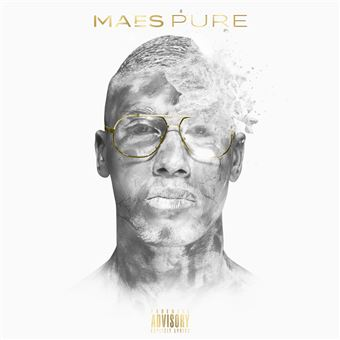

Pure est le premier album studio du rappeur français Maes, sorti le 30 novembre 2018 sous les labels LDS Production, Capitol, Millenium et Universal. Il contient 18 titres, dont deux featurings, avec les rappeurs français Booba et Zed, le featuring avec Booba se classant dès sa sortie à la première place du classement français devenant alors le premier numéro un du rappeur. L'album a été précédé par la sortie en single de trois de ses chansons : Billets verts, Avenue Montaigne et Madrina avec Booba. À sa sortie, l'album se classe à la cinquième position du classement français
Le 31 octobre 2018, Maes a annoncé l'album via ses comptes de réseaux sociaux. À propos de la direction artistique du projet, Maes a révélé que « J'avais dit dans une interview l'année dernière que, pour mes sons futurs, je voulais améliorer mes mélodies, aller plus loin dans mon chant, dans ma voix. Tout en gardant mes textes de rue, mon identité Maes. C'est des sons travaillés, un 4-4-2 pour aller gagner la Coupe du monde. ». Et à propos du nom de l'album, Maes a aussi révélé que « Mon nom d'album, Pure, c'était réfléchi avec ma production. Ça fait un bon moment. Je crois que j'étais encore sur Réelle vie 2.0 que je pensais déjà au projet. Booska Pure, dans le freestyle Rapelite Échantillon 2.0, tu viendras pécho 0.9 … Pleins de petits trucs comme ça. Pure c'est la pureté, tu peux le prendre à différents sens. Pure dans le délire des textes pures […] Pure c'est blanc, c'est transparent, c'est moi.

Réelle vie 2.0
Les derniers salopard

Réelle vie 3.0

Omerta

EN ATTENDANT LVC 2

La vie continue